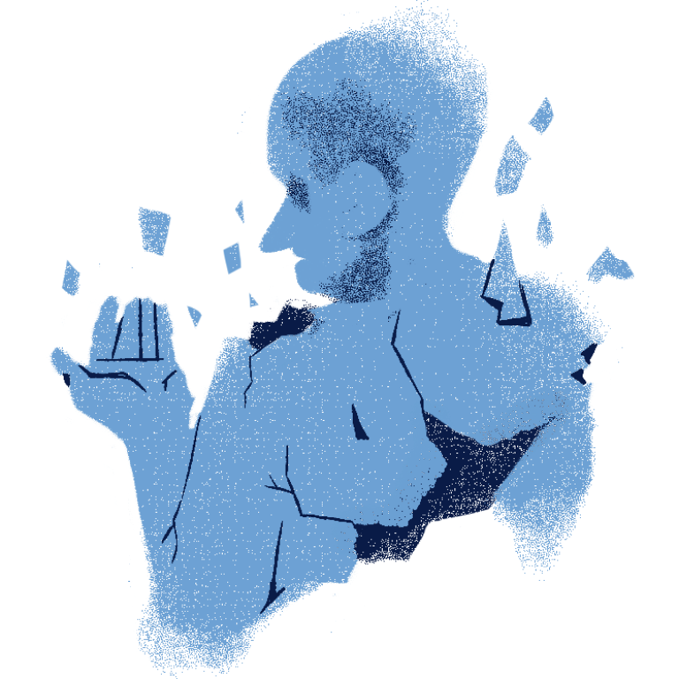
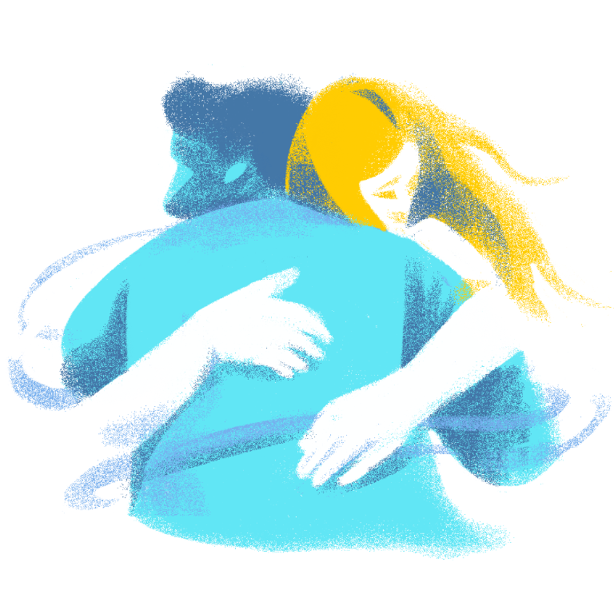

ANGER
Have you ever felt like you just want to release some heat inside you? Or you’ve reached a point where you are so irritated, you just want to teach those who piss you off a lesson? Maybe you’re not really a person who plants anger onto other people, but have you ever felt a strange feeling inside where if things don’t go the way you want, it starts to feel heavy?
The weight to hold back your desire may some harmless, but releasing it may prove to be painful to you and the people who might be affected. For some people, that burden can be directed to the things that bring them trouble or at least have a medium of easing the anger, which allows them to safely direct their anger to something that won’t affect others.
But what happens when you start to hold you discontent and start to direct it to what you think is the cause or to the person who acted in the first place? To some, to their enemies, but for a few, painfully so, to themselves. The look in their eyes when they see who they have become after the burden can become so painful once they realize.
Anger, in its form
Anger is one of the most basic human emotions, primarily stemming from irritation, reaction from a threat, or discontent on the environment a person is on. It is an emotion that shouldn’t always be viewed as negative nor positive, as there are times when expression is needed when a voice needed to be heard, to disable a threat, and to signal a person’s motivation. But when left unchecked, it can result into blinding rage, which not only will hurt the person feeling the rage, but also the people around him/her, even those who have nothing to do with said anger.
Rage can result into:
- Depression
- Anxiety
- Self-Hatred
- Self-Harm
An Embrace May Not Be So Difficult
As destructive as anger may sound, it is normal and natural for person to feel anger. What isn’t normal is when starts to blind people, turning it to hatred, rage, and wrath.
Sometimes, people just needs to be heard, to allow them to feel safe without resorting to rage to release their voice. A few deep breaths or a short break should ease down the anger and when you’re ready, you can let your voice be heard once again.

Assess yourself, take a moment to know what you really want.

Choose to confide with someone, a person you can trust.

Find distractions or activities to work it off, or to relax until you're ready.